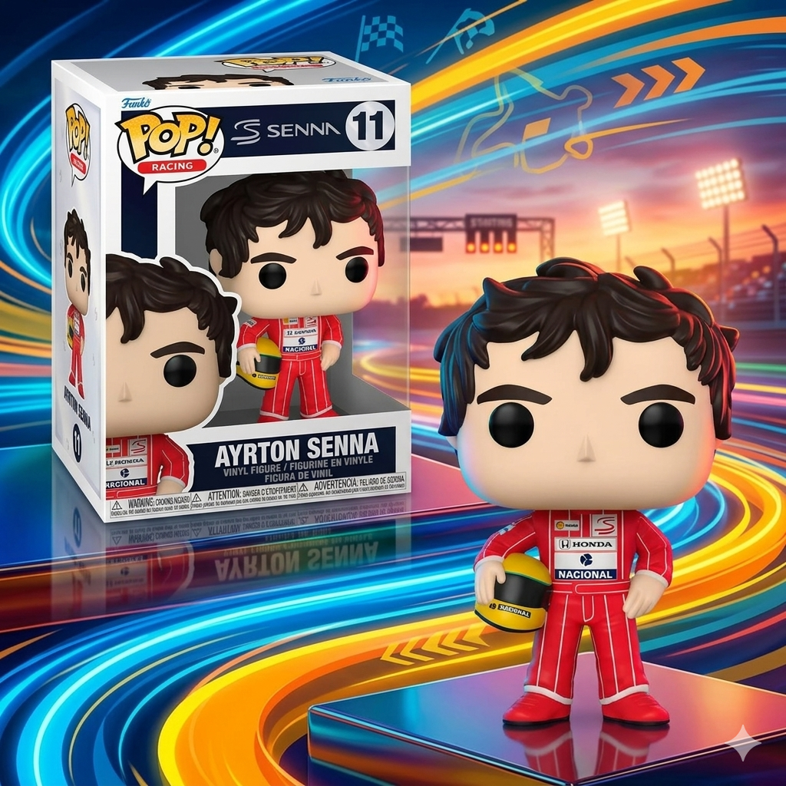

Antonelli domina Silverstone, vence Hamilton na Sprint e conquista pole histórica no GP da Inglaterra 2026

Kimi Antonelli transformou Silverstone em palco de afirmação definitiva na Fórmula 1. O jovem piloto da Mercedes venceu a Sprint do GP da Inglaterra 2026 após superar Lewis Hamilton em duelo direto e, poucas horas depois, confirmou o domínio ao conquistar a pole-position para a corrida principal deste domingo. O sábado em Silverstone pode marcar oficialmente o início de uma nova era na Fórmula 1. Diante da torcida britânica e sob enorme pressão da Ferrari de Hamilton, Antonelli mostrou maturidade, ritmo e frieza de campeão. O resultado não apenas amplia sua liderança no campeonato, mas também aumenta a sensação no paddock de que a Mercedes finalmente encontrou seu novo protagonista para a era pós-Hamilton.
Gostou do conteúdo? Confira nossa loja!

Antonelli supera Hamilton e muda o clima da temporada
A Sprint começou com Hamilton segurando a liderança após largar na pole diante do público britânico. Durante as primeiras voltas, o heptacampeão conseguiu administrar a pressão de Antonelli, mas a Mercedes parecia claramente mais competitiva em ritmo de corrida. A ultrapassagem aconteceu na volta 8. Hamilton perdeu rendimento na reta principal, aparentemente por limitações no sistema híbrido e no uso de bateria. Antonelli aproveitou imediatamente a oportunidade e assumiu a liderança da prova sem grandes dificuldades. Depois disso, a diferença aumentou volta após volta. Além da vitória, Antonelli ainda marcou a melhor volta da Sprint no giro final, deixando claro que tinha controle absoluto da corrida. Lewis Hamilton terminou em segundo, enquanto Lando Norris completou o pódio em Silverstone.
Pole-position confirma domínio da Mercedes em Silverstone
Se a vitória na Sprint já havia chamado atenção, a classificação colocou Antonelli definitivamente no centro das atenções da Fórmula 1. O piloto italiano marcou 1min28s111 no Q3 e garantiu a pole do GP da Inglaterra 2026, superando Charles Leclerc e Lewis Hamilton na disputa decisiva. Hamilton chegou como favorito após liderar o treino livre e conquistar a pole Sprint, mas Antonelli cresceu justamente no momento mais importante da sessão. A Mercedes mostrou velocidade impressionante no setor final do circuito, principalmente nas curvas rápidas de Silverstone, onde Antonelli encontrou desempenho consistente durante toda a classificação.
Grid do top 10 em Silverstone
- 1. Antonelli — Mercedes
- 2. Charles Leclerc — Ferrari
- 3. Lewis Hamilton — Ferrari
- 4. George Russell — Mercedes
- 5. Isack Hadjar — Red Bull
- 6. Lando Norris — McLaren
- 7. Max Verstappen — Red Bull
- 8. Oscar Piastri — McLaren
- 9. Arvid Lindblad — Red Bull
- 10. Liam Lawson — Racing Bulls
Gabriel Bortoleto surpreende novamente na classificação
Outro destaque importante do sábado foi Gabriel Bortoleto. O brasileiro da Audi passou por problemas no Q1 após superaquecimento de óleo, chegou a ficar ameaçado de eliminação, mas reagiu na reta final e avançou para o Q2. Na segunda parte da classificação, Bortoleto ficou muito próximo do Q3. O brasileiro terminou apenas 32 milésimos atrás de Liam Lawson, que fechou o top 10, e ainda superou Nico Hülkenberg na comparação interna da equipe. A performance reforça o crescimento do brasileiro na temporada e aumenta as expectativas para uma possível disputa por pontos neste domingo.
Por que o resultado de Bortoleto chama atenção?
Além da posição no grid, o contexto torna o resultado ainda mais relevante: Silverstone é um dos circuitos mais técnicos do calendário, a Audi ainda busca evolução no pelotão intermediário, Bortoleto reagiu rapidamente após problemas mecânicos e o brasileiro mostrou ritmo competitivo em voltas decisivas.
Verstappen preocupa e Red Bull vive sábado abaixo do esperado
Enquanto Mercedes e Ferrari dominaram as manchetes, a Red Bull saiu de Silverstone com sinais preocupantes. Max Verstappen teve dificuldades tanto na Sprint quanto na classificação. O holandês perdeu posições logo na largada da corrida curta e terminou apenas em sexto. Na classificação, ficou somente em sétimo, atrás inclusive de Isack Hadjar. O desempenho aumenta os questionamentos sobre o equilíbrio da Red Bull na temporada 2026, especialmente em circuitos de alta velocidade.
O impacto da vitória de Antonelli na disputa pelo campeonato
A vitória na Sprint e a pole-position podem representar muito mais do que apenas um fim de semana forte. Antonelli agora amplia sua liderança no Mundial e reforça a percepção de que a Mercedes voltou ao topo da Fórmula 1 de forma consistente. Mais do que velocidade, o italiano demonstrou algo que normalmente leva anos para surgir na categoria: controle emocional sob pressão. Vencer Hamilton em Silverstone, diante da torcida britânica, tem peso simbólico enorme dentro da Fórmula 1. E o paddock percebeu isso.
O que esperar do GP da Inglaterra 2026?
A corrida deste domingo promete cenário completamente aberto. A Mercedes larga como favorita, mas Ferrari mostrou ritmo competitivo em classificação. Norris aparece como ameaça estratégica, enquanto Verstappen tentará corrida de recuperação. Já Gabriel Bortoleto surge como possível surpresa na disputa por pontos. Com Antonelli na pole, Silverstone pode testemunhar uma das vitórias mais importantes da nova geração da Fórmula 1.
Leia também no Ponto de Frenagem: